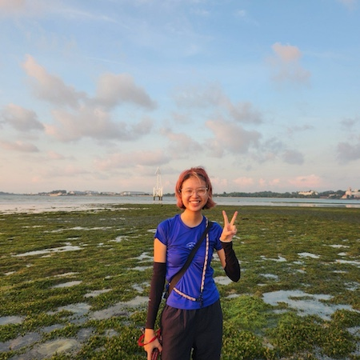

|  | Rachael GOHHonours Student
Email: goht0036(AT)e.ntu.edu.sg |
Background
I am an Environmental Earth Systems Science student at the Asian School of the Environment, Nanyang Technological University. My previous research experiences include studying soil microbial community shifts at Singapore’s Central Catchment Nature Reserve with Team Underground and the Population Genetics & Genomics Lab (NTU), as well as seagrass-associated microbiomes with the Case Lab (Singapore Centre for Environmental Life Sciences Engineering). Beyond research, I am the Co-Lead of LepakinSG's Land Use Planning team, that advocates for biodiversity conservation during nature group engagements in light of local developments. I am also involved in community initiatives like the Friends of Chestnut Nature Park to raise awareness about our nature spaces. In my free time, I like to explore Singapore's intertidal habitats with other enthusiasts, or coop myself up at the Singapore Botanic Gardens to look at bryophytes. Through both science and outreach, I hope to bridge research with public engagement to foster stronger appreciation and protection of biodiversity.
Current Research
Octocorals are ecologically important reef organisms in tropical marine ecosystems, yet they remain understudied compared to scleractinian corals. My project investigates the diversity and evolutionary relationships of Singapore’s Octocorallia by studying specimens collected from its shallow coastal habitats and leveraging DNA barcode data generated in the last decade. To complement this, we will conduct intertidal surveys to document extant local taxa and examine historical specimens in Singapore’s natural history collections. By integrating molecular data with morphological observations, we aim to 1) infer the phylogeny of octocorals and 2) generate an annotated checklist of Singapore’s octocoral fauna, contributing to broader efforts in understanding local biodiversity.